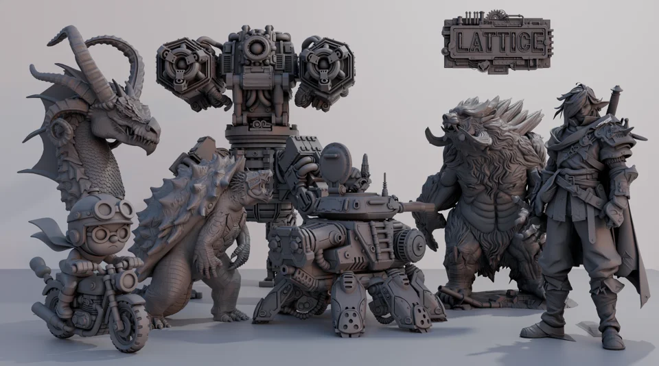
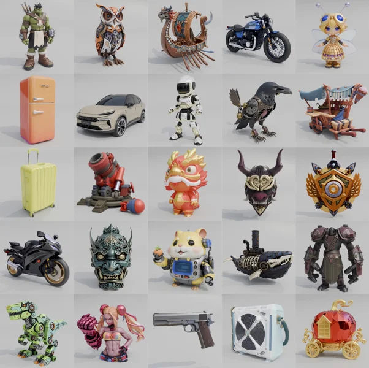

LATTICE → HY3D 2.5/3.0
Scalable generation of detailed 3D shapes with a compact latent representation.
CVPR 2026
I’m a PhD student at MMLab, CUHK, advised by Xiangyu Yue.
I build scalable generative models for high-fidelity multimodal content creation, with a current focus on 3D. My recent work contributes to the Hunyuan3D series at Tencent Hunyuan.


Scalable generation of detailed 3D shapes with a compact latent representation.
CVPR 2026
